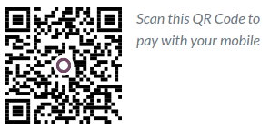

Códigos EPC QR¶
El código de respuesta rápida del Consejo Europeo de Pagos, o código EPC QR consiste en un código de barras bidimensional que los clientes pueden escanear desde sus aplicaciones de banca móvil para iniciar una Transferencia de crédito SEPA (SCT) y así pagar sus facturas de inmediato.
Además de brindar facilidad de uso y rapidez, reduce enormemente los errores tipográficos que pueden producirse al hacer pagos.
Nota
Esta función solo está disponible para empresas en varios países europeos, como Austria, Bélgica, Finlandia, Alemania y Países Bajos.
Configuración¶
Vaya a en la sección Pagos del cliente.
Configure su diario de cuenta bancaria¶
Asegúrese de que su cuenta bancaria está configurada en Odoo con su IBAN y BIC.
Para hacerlo, vaya a , abra su diario de banco, y llene los campos Número de cuenta y el Banco que se encuentran en la columna Número de cuenta bancaria.

Emitir facturas con códigos EPC QR¶
Los códigos EPC QR se agregarán de manera automática a tus facturas. Si los clientes están con bancos que aceptan pagos a través de códigos EPC QR, podrán escanear el código y pagar la factura
Vaya a , y cree una nueva factura.
Antes de publicar, abra la pestaña más información. Odoo llena el campo Banco destinatario de manera automática con su IBAN.
Nota
En la pestaña Otra información, usamos el campo Banco destinatario para recibir los pagos de sus clientes. Odoo llena este campo de manera automática con su IBAN y lo usa para generar un código QR EPC.
Cuando la factura se imprime o se previsualiza, el código QR se incluyo al final.
Truco
Si desea emitir una factura sin código EPC QR, quite el IBAN indicado en el campo Banco destinatario que se encuentra en la pestaña Otra información de la factura.